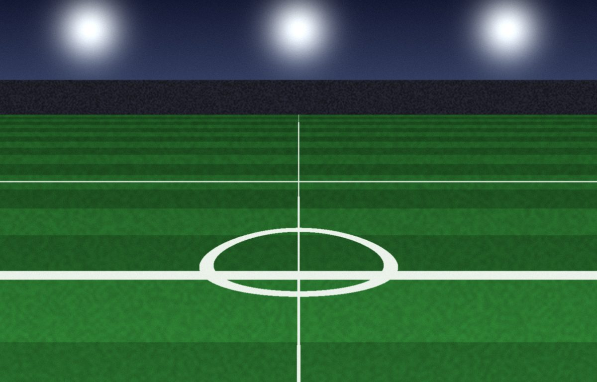

Política
Câmara de Presidente Prudente aprova orçamento de 2027 em primeira votação
Texto prevê mais recursos para saúde e manutenção de estradas rurais.
Mais em Política

Outras editorias

Safra de soja no Oeste Paulista deve ser a maior em cinco anos, projetam cooperativas
RegiãoPrefeitura de Presidente Prudente anuncia recapeamento em 14 bairros a partir de dezembro
TurismoRio Paraná tem temporada de pesca aberta e movimenta pousadas do Pontal
